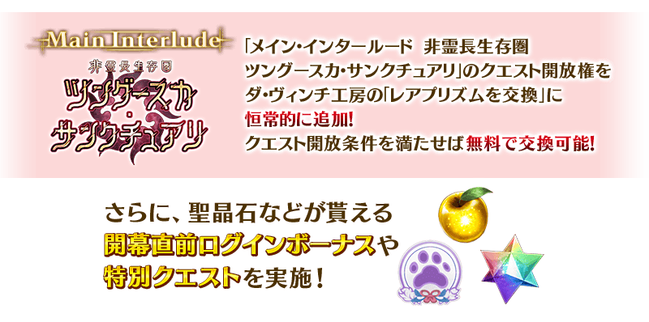
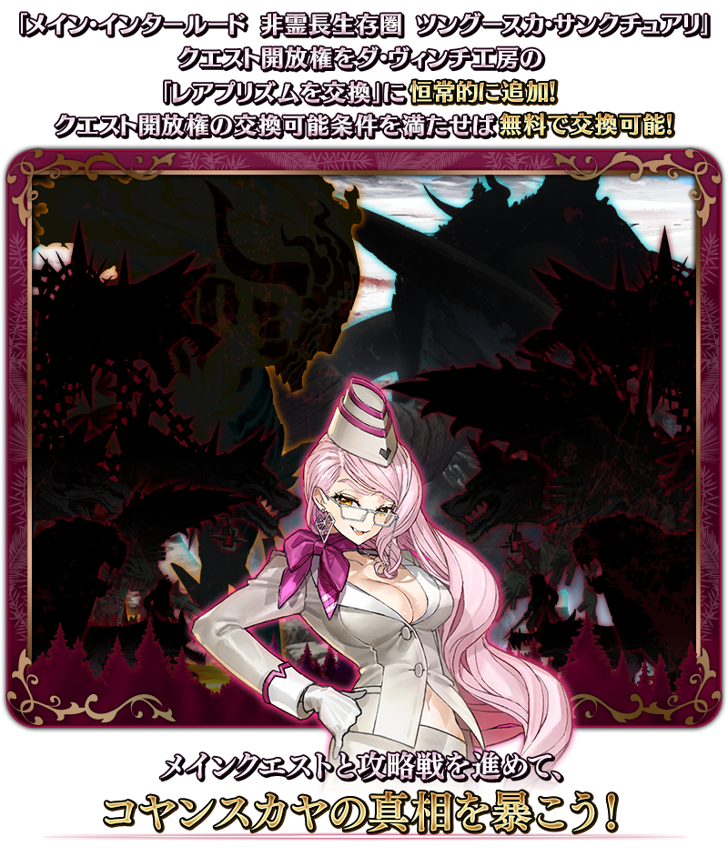
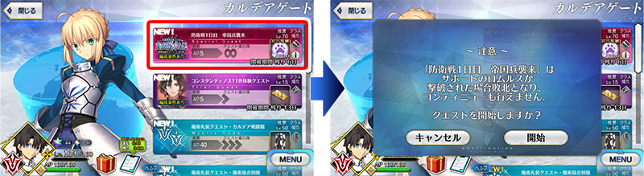
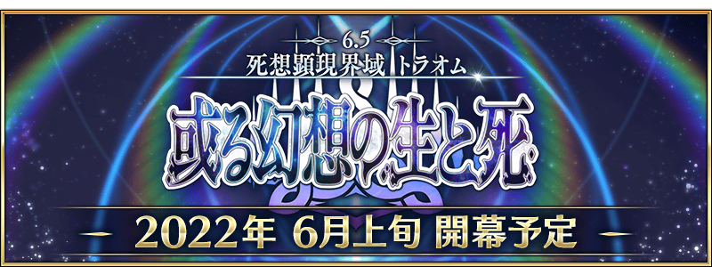

配合預定在2022年6月上旬開幕的第2部 第6.5章「死想顯現界域 如夢似幻 某幻想的生與死」，舉辦『「死想顯現界域 如夢似幻 某幻想的生與死」開幕前夕宣傳活動 第2彈』！
關於現在舉辦中的『「死想顯現界域 如夢似幻 某幻想的生與死」開幕前夕宣傳活動 第1彈』，請在此處確認。
◆宣傳活動舉辦期間◆
2022年5月25日(三) 17:00～6月30日(四) 11:59
◆第2部 第6.5章 開幕預定時期◆
2022年6月上旬
◆第2部 第6.5章 開放條件◆
通過「非靈長生存圏 通古斯卡聖域」的後記(エピローグ)後開放。
※不需要通過亞種特異點(從Ⅰ到Ⅳ)。
※本頁面皆為開發中圖片。會有與實際圖片相異的情況。

為了記念「死想顯現界域 如夢似幻 某幻想的生與死」的開幕，實施特別登入獎勵。
在下述的期間中登入7次(1天算1次)的話，贈送最多黃金果實7個與聖晶石7個！
◆舉辦期間◆
2022年5月26日(四) 3:00～6月9日(四) 2:59
※舉辦期間內合計7天內登入的話，可領取所有的登入獎勵。
◆贈送對象◆
2022年6月8日(三) 2:59前通過「特異點F 炎上汙染都市 冬木」的御主對象
※上述時間前，在管理室(ターミナル)畫面的關卡橫幅必須要有「CLEAR」的文字顯示。
◆登入獎勵內容◆
| 登入次數 | 贈送內容 | |
|---|---|---|
| 第1次 |

|
黃金果實 1個 |

|
聖晶石 1個 | |
| 第2次 |
|
黃金果實 1個 |
|
|
聖晶石 1個 | |
| 第3次 |
|
黃金果實 1個 |
|
|
聖晶石 1個 | |
| 第4次 |
|
黃金果實 1個 |
|
|
聖晶石 1個 | |
| 第5次 |
|
黃金果實 1個 |
|
|
聖晶石 1個 | |
| 第6次 |
|
黃金果實 1個 |
|
|
聖晶石 1個 | |
| 第7次 |
|
黃金果實 1個 |
|
|
聖晶石 1個 | |
※登入獎勵會在每天3:00配發。 ※合計7天內能領取，但根據成為贈送對象的時間點，可能無法到此上限。
「主線分支 非靈長生存圏 通古斯卡聖域」永久追加！
「主線分支 非靈長生存圏 通古斯卡聖域」的關卡開放權在達文西工房的「稀有稜鏡交換」永久追加。
※主線分支「非靈長生存圏 通古斯卡聖域」是伴隨在2021年舉辦的期間限定活動「非靈長生存圏 通古斯卡聖域」主線分支化，有一部份調整。
通過「非靈長生存圏 通古斯卡聖域 序幕(プロローグ)」的話，才能於達文西工房的「稀有稜鏡交換」交換「主線分支 非靈長生存圏 通古斯卡聖域」。
並且，交換所需的稀有稜鏡為「0個」，滿足關卡開放權的交換條件就能免費交換。
◆關卡開放權交換條件◆
有通過「非靈長生存圏 通古斯卡聖域 序幕(プロローグ)」的御主對象
※不需要通過亞種特異點(從Ⅰ到Ⅳ)。
◆追加時間◆
2022年5月25日(三) 17:00～
◆追加道具(永久)◆
| 追加道具 | 能交換次數 | 1次交換所需的 稀有稜鏡數 |
|---|---|---|
| 「主線分支 非靈長生存圏 通古斯卡聖域」關卡開放權 | 1次 | 0個 |
※在「稀有稜鏡交換」追加的「主線分支 非靈長生存圏 通古斯卡聖域」關卡開放權為永久，沒有交換期限。

◆有關「主線分支 非靈長生存圏 通古斯卡聖域」的注意◆
※就算已經通過下述期間限定活動的情況也可遊玩。
・非靈長生存圏 通古斯卡聖域
※主線分支「非靈長生存圏 通古斯卡聖域」是伴隨在2021年舉辦的期間限定活動「非靈長生存圏 通古斯卡聖域」主線分支化，有一部份調整。
※故事與「非靈長生存圏 通古斯卡聖域」同樣內容。
※有在過去舉辦的「非靈長生存圏 通古斯卡聖域」獲得「聖杯」的情況，在「主線分支 非靈長生存圏 通古斯卡聖域」會以「傳承結晶」代替「聖杯」做為通過報酬。
※「主線分支 非靈長生存圏 通古斯卡聖域」中，不會發生與其他御主合作作戰的「襲擊關卡」，會發生攻略戰。
※無法獲得一部份道具。
※關卡通過報酬與在過去舉辦的「非靈長生存圏 通古斯卡聖域」的報酬不同。
※適用的支援編成設定為「普通關卡」。

下述的期間中，在「御主任務」的「限定」標籤內，通過「非靈長生存圏 通古斯卡聖域」為目的，以期間限定追加「【第2部 如夢似幻開幕前夕 第2彈】任務」。
通過後，可得到聖晶石10個！
◆舉辦期間◆
2022年5月25日(三) 17:00～6月30日(四) 11:59
◆領取期間◆
2022年5月25日(三) 17:00～7月7日(四) 11:59
◆追加任務◆
| 任務名稱 | 任務達成報酬 | |
|---|---|---|
|
【第2部 如夢似幻開幕前夕 第2彈】 通過『非靈長生存圏 通古斯卡聖域 後記(エピローグ)』 |
|
聖晶石 10個 |
※請注意舉辦期間與領取期間有所差異。 ※請注意與每週日23:00更新的普通任務(Weekly)不同欄位，超過領取期間的話無法入手報酬。 ※就算達成「【第2部 如夢似幻開幕前夕 第2彈】任務」，也不會計算在普通任務(Weekly)的任務進行度。 ※已經通過「非靈長生存圏 通古斯卡聖域 後記(エピローグ)」的情況，任務會自動達成。 ※根據主線故事的進行度會有無法達成「【第2部 如夢似幻開幕前夕 第2彈】任務」的情況。
下述的期間中，主線關卡第2部 第6章為止的消耗AP變成「0」！
由於是不消耗AP推進主線關卡的絕佳機會，尚未通過主線關卡的御主玩家，請務必活用此機會！
◆舉辦期間◆
2022年5月25日(三) 17:00～6月30日(四) 11:59
◆對象關卡◆
主線關卡第1部(從特異點F到終局特異點)
主線關卡第2部(第1章～第6章)
※現在主線關卡第2部 第5.5章為止的AP消耗量是永久變成1/2的狀態。因此，宣傳活動結束後，該主線關卡的AP消耗量會變成1/2。 ※請注意亞種特異點(從Ⅰ到Ⅳ)、主線分支、自由關卡為對象外。
「死想顯現界域 如夢似幻 某幻想的生與死」開幕前夕宣傳活動特別關卡以期間限定在迦勒底之門出現！
通過各關卡的話，可獲得獸之足跡。
「死想顯現界域 如夢似幻 某幻想的生與死」開幕前夕宣傳活動特別關卡是規定回合迎撃席捲而來的大量敵人耐久戰。
我方NPC從者被擊倒的話算關卡失敗，無法接關。
另外，每日開放關卡會逐日增加敵人數量，攻略的難易度會上昇。
迎撃不斷襲來的敵人大軍吧。

◆舉辦期間◆
2022年5月25日(三) 17:00～6月1日(三) 11:59
◆關卡開放條件◆
有通過「非靈長生存圏 通古斯卡聖域 後記(エピローグ)」的御主對象
◆開幕前夕宣傳活動特別關卡◆
| 開放時間 | 關卡名 | 通過報酬 | |
|---|---|---|---|
| 2022年5月25日(三) 17:00 | 防衛戦第1天 |

|
獸之足跡 2個 |
| 2022年5月26日(四) 17:00 | 防衛戦第2天 |
|
獸之足跡 2個 |
| 2022年5月27日(五) 17:00 | 防衛戦第3天 |
|
獸之足跡 2個 |
| 2022年5月28日(六) 17:00 | 防衛戦第4天 |
|
獸之足跡 2個 |
| 2022年5月29日(日) 17:00 | 防衛戦第5天 |
|
獸之足跡 2個 |
| 2022年5月30日(一) 17:00 | 防衛戦第6天 |
|
獸之足跡 2個 |
| 2022年5月31日(二) 17:00 | 防衛戦第7天 |
|
獸之足跡 2個 |
「死想顯現界域 如夢似幻 某幻想的生與死」開幕前夕宣傳活動特別關卡通過後也不會消滅，能挑戰無數次。 ※關卡通過報酬、戰利品、御主EXP、魔術禮裝EXP、絆點數只可在初次通過時獲得。 ※請注意「死想顯現界域 如夢似幻 某幻想的生與死」開幕前夕宣傳活動特別關卡變成關卡失敗的情況，無法接關。
其他還有，
・「主線分支 非靈長生存圏 通古斯卡聖域」發佈記念Pick Up召喚
・「死想顯現界域 如夢似幻 某幻想的生與死」開幕前夕宣傳活動 第1彈
・「死想顯現界域 如夢似幻 某幻想的生與死」登場從者先行Pick Up召喚
以期間限定舉辦中！
並且，第2部 第6.5章「死想顯現界域 如夢似幻 某幻想的生與死」也預定開幕！
關於詳情，請自下述橫幅確認。
■「主線分支 非靈長生存圏 通古斯卡聖域」發佈記念Pick Up召喚詳細情報

■「死想顯現界域 如夢似幻 某幻想的生與死」開幕前夕宣傳活動 第1彈詳細情報

■「死想顯現界域 如夢似幻 某幻想的生與死」登場從者先行Pick Up召喚詳細情報

■第2部 第6.5章「死想顯現界域 如夢似幻 某幻想的生與死」詳細情報 